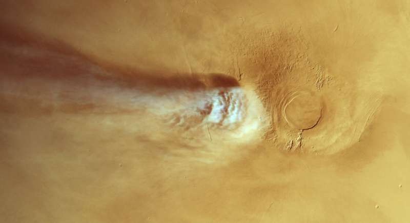

October 08, 2026
Mars's Oddest Cloud Just Got Odder — It May Run on Physics We've Never Seen

ESA/DLR/FU Berlin
Every spring and summer on Mars, a wisp of white cloud emerges downwind of the 20-kilometer-tall Arsia Mons volcano. It forms, grows and fades within a single Martian day — stretching up to 1,800 kilometers, nearly twice the length of the United Kingdom, before evaporating. Then it does it again the next morning, for months.
ESA's Mars Express first spotted the Arsia Mons Elongated Cloud (AMEC) in 2018 and has watched it ever since. It looks like a perfectly ordinary orographic cloud — the kind that forms on Earth when wind flows over mountains. But when researchers tried to simulate it, the cloud refused to appear.
A cloud that shouldn't exist
Now a new study in Nature Geoscience has found the reason: the only way to reproduce the AMEC in a state-of-the-art meteorological model is to include physics that textbooks treat as theoretical — physics that has never been observed operating in a planetary atmosphere.
The process is called homogeneous nucleation. On Earth, clouds form by heterogeneous nucleation: water vapor condenses onto tiny particles of dust, salt, pollen or soot. For the AMEC, the team says, none of that is needed. The water vapor turns directly into ice particles, spontaneously.
"For the AMEC, it seems that cloud formation takes place without needing any of this 'stuff,'" says lead author Jorge Hernández-Bernal of LMD/CNRS/Sorbonne Université. "Water vapor turns directly into icy cloud particles without any middle step. It's akin to droplets of condensation appearing in the middle of a room, rather than on a window."
How Mars pulls off the trick
Homogeneous nucleation demands extreme supersaturation — relative humidity more than 100,000 times what we experience on Earth in daily life. Theory said it was possible; nobody had ever caught it happening on a planet.
The volcano does the work. As winds flow past Arsia Mons, its bulk triggers a powerful wave that lifts moist parcels of air several kilometers in just minutes. Temperatures crash by 30 degrees Celsius in 10 minutes. Relative humidity spikes to extremes — and the vapor freezes directly into ice.
"We've not seen these conditions on Mars before, but our finding now strongly suggests that the planet's humidity can indeed reach these extreme levels," says Hernández-Bernal.
The finding also reframes a long-standing puzzle: previous modelling of the cloud kept failing because the models assumed Martian dust seeded the ice, as it does elsewhere on the planet. Dust, it turns out, may be irrelevant here — the cloud is born from airflow dynamics, not from chemistry.
Why it matters beyond Mars
The broader takeaway is that the rulebook for clouds may differ from world to world. As ESA Mars Express project scientist Colin Wilson puts it: "While clouds on Earth and Mars seem to be governed by the same 'rules,' understanding this exotic Martian cloud required exotic physics — and this may be true elsewhere in the cosmos."
That last line is doing heavy lifting: if textbook physics assumed too much on Mars, it could be missing processes in the atmospheres of exoplanets too.
Paper: J. Hernández-Bernal et al., "Homogeneous Ice Nucleation from Water Vapour Suggested by Elongated Clouds on Mars," Nature Geoscience (2026). DOI: 10.1038/s41561-026-02089-9
Source: ESA (via Phys.org) — read the original report
← Back to latest stories